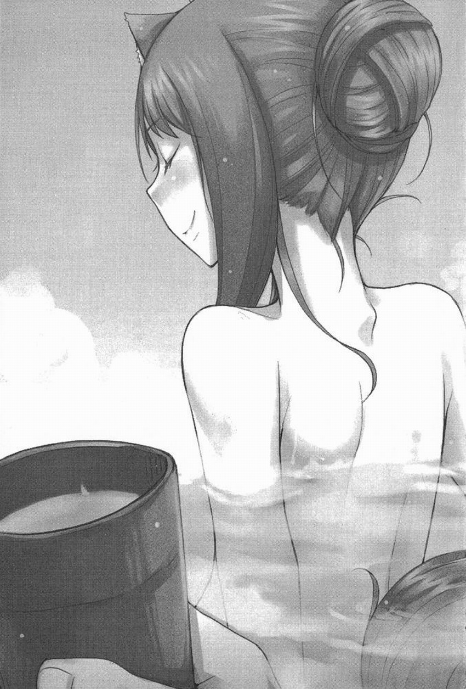

終幕
羅倫斯頭痛極了。
原本頭痛只是一種形容而已，但羅倫斯現在真的覺得頭痛了起來。
頭痛的原因十分簡單。
那就是——赫蘿擅自寄出了信件。
收件人包括了諾兒菈、伊弗等人，全是羅倫斯與赫蘿在旅途中認識的女性。
信件內容是告知即將舉辦宴會，所以要大家在春天阿傑裡聖人祭前來。
而且，直到赫蘿已經寄出信件，並且一邊說：「雄性的面子問題就交給汝來處理。」一邊交出寄信憑證的那一刻，羅倫斯才知道有寄信這回事。
在那個當下，如果跑着追上去，應該還追得上代收信件的旅行商人。
但是，如果羅倫斯這麼做，可能會惹得赫蘿大發雷霆。
根據與赫蘿一路走下來的經驗，羅倫斯知道赫蘿一定有理由，才會做出這種事情。
而且，赫蘿那麼機靈，極可能早已準備好了一堆理論伺機出擊，也準備好如何表現自己的正當性。重點是，很多方面已經不是想辦法說服就能夠改變了。
此刻的羅倫斯只能夠推測自己是不是做過什麼事情惹惱了赫蘿，或是沒察覺到自己惹惱赫蘿而使得赫蘿越來越心煩，又或者赫蘿純粹是心情不好而已。
如果做了這麼多推測還想不出原因，就只能夠向神明禱告了。
在這深山裡就算做了禱告，也不知道會傳進什麼神明的耳中。羅倫斯不禁覺得，這邊就是有神明，也應該只有像赫蘿一樣，是有着大而尖挺的三角形狼耳朵和蓬鬆亮麗尾巴的神明。
不過，既然賢狼赫蘿本人心裡藏了不知什麼秘密，當然不可能應付得了。
到最後，羅倫斯能夠做的事情相當有限。赫蘿應該是委託他人代筆寫信，在這一帶赫蘿能夠信任、並委託代筆的人物沒幾個，所以羅倫斯只能夠向對方打聽。
從赫蘿手中接過寄信憑證後，羅倫斯走在雪花不停飄落的道路上，準備前往建造中的偏屋。
原本預計去年秋天左右完成所有房子的建設，然後利用整個冬天做好裝潢，到了春天融雪時，即可迎接客人的到來。然而，完工日期卻是一延再延。部分原因是據說南方的平野上引發戰爭，所以血氣方剛的旅行工匠們競相前往了戰地。也有部分原因是借出建設資金的融資者慘遭大型商船沉船意外而虧了大錢，所以搞得人仰馬翻。再加上這次的雪降得比往年都早，導致物資供應不順。
這三年來，羅倫斯體認到在生意世界裡，即使沒有處身于中心地，也不可能一直風平浪靜地前進。
不過，主屋方面，由於偶爾仰賴了赫蘿的狼之力，並動用了所有過去旅途中得到的門路，總算是如期完了工。
因為生意對手預定在夏天再開一家新店，所以羅倫斯說什麼都想要先發制人。
因此，羅倫斯打算在今年春天舉辦終於能夠實現的開業典禮。
不過，照預定來說，開業典禮會是在阿傑裡聖人祭之後的事情。
與赫蘿之旅而結識的知己當中，有好幾位是羅倫斯完全高攀不起的上流人士。雖然這些人主動要求羅倫斯邀請他們參加開業典禮，但羅倫斯可沒膽子讓他們走過雪路。畢竟舉辦阿傑裡聖人祭的時期，山上還看得見殘雪斑斑。
不過，如果是慣於行走雪路的人，或是住在不算太遠的地方且關係密切的人，就會是適合提前邀請他們來慶祝的時期。就這點來看，也能夠看出赫蘿的心機之重。
赫蘿絶對有什麼企圖。
如果純粹是想捉弄人或開玩笑，那以寄信費來說，也未免花掉了太多了錢。
不過，支付寄信費的人是伊弗就是了。伊弗在南方的大帝國成立了商行，或許是她仍勇于從事投機行為之故，據說她現在被列名為市政議會的準議員。身為一個商人，伊弗在一流世界裡已逐步確立穩固的地位。提到諾兒菈，聽說她目前在留賓海根東方的城鎮擔任祭司職務，寄信到那裡也同樣要花費不小的金額。雖說狄安娜和艾莉莎都住在比較近的地方，但艾莉莎居住的村落規模小得讓人不免懷疑信件到底能否平安送達。至于弗蘭，因為羅倫斯最後一次與她取得聯繫時介紹了艾莉莎的修道院數據，所以弗蘭或許還在艾莉莎的村落。
這麼回想後，羅倫斯不禁覺得自己擁有豐富又有趣的人脈。想象起這些女人拿着赫蘿的信件在這裡齊聚一堂，羅倫斯就無法控制自己的表情僵硬起來。
每次呼吸，都會吸入彷彿整個肺部都快凍結似的冰冷空氣。羅倫斯一邊吸入冰冷空氣，一邊從摀住嘴巴的指縫間嘆出熱氣。
「真是的……不知道有什麼企圖……」
與赫蘿交往快六年，羅倫斯到現在仍無法完全理解赫蘿。
前陣子也才大吵了一架。
羅倫斯完全不記得吵架的原因，只記得就是因為赫蘿在閙脾氣。
印象中好像是赫蘿嫌飯太難吃之類的事情。
因為是在偏遠地帶過冬，所以依赫蘿那樣的個性，偶爾應該要宣洩一下積壓心中的怨氣——羅倫斯要自己這麼理解事實。
而且，雖然自己都覺得蠢，但羅倫斯喜歡吵架後再和好的感覺。
「咦？羅倫斯先生？」
羅倫斯再次嘆了口氣後，一邊撥去積在頭上的雪，一邊走進搭建中的偏屋時，正在排列地板石塊的少年抬起了頭。少年一下子長高許多，已經高過了赫蘿，再過兩、三年，甚至可能會高過羅倫斯。
不過，少年從以前就有着細瘦身形，現在還把留長的頭髮綁成馬尾，所以看起來挺像個身材高大的女孩。與羅倫斯相遇時是個流浪學生的寇爾拍了拍手後，取下綁在頭上的毛巾，擦拭額頭的汗水。
「已經中午了嗎？」
「不是，我是想問一下這個。」
說罷，羅倫斯舉起從赫蘿手中收下的寄信憑證。寇爾露出像是喝下苦水似的表情。赫蘿果然是委託寇爾代筆。這地方除了寇爾之外，只有一、二人能夠以多國語言寫出如此漂亮的文章。
「我也算是被逼着寫的……」
「沒事，這方面我不會怪你的。而且，赫蘿一定也是抱著你絶對沒辦法拒絶的想法，才會叫你寫的吧。」
寇爾不問酷暑寒冬整年工作，使得他的手上筋骨隆起，與其臉蛋實不相稱。
不過，攤開在寇爾腳邊的，是他向拜訪過此地的高位聖職者和神學者借來抄寫、或直接借來的複本。羅倫斯知道寇爾在工作的同時，也花了很長的時間默記書本內容。羅倫斯也知道寇爾會咬着生洋蔥忍受睡意，在夜晚用功。
與羅倫斯兩人分開後，寇爾流浪于各地的教會和修道院約兩年時間，最後決定在羅倫斯底下工作。不過，寇爾絶非已放棄當初想要成為聖職者的夢想。得知羅倫斯決定在此地開店後，寇爾抱著能夠一石二鳥的想法，而直奔此地。
寇爾的計劃目前看來算是成功。如果待在其他城鎮，很難遇見世界各地的知識分子；但在這裡，寇爾似乎與這些知識分子有所交流。這些知識分子也似乎都很喜歡寇爾，而羅倫斯當然也明白如果寇爾能夠與這些偉大人物搭上關係，在生意上能夠為他帶來許多好處。
畢竟，不管再忙的人來到這裡後，一定都會有很多閒暇時間。
這裡是位於深山、荒無人煙的秘境。
此地是據說不會受到任何戰亂波及的紐希拉。
「先不說這個，我是想問你，赫蘿叫你寫這些信的時候態度如何？」
「赫蘿小姐的態度？」
「嗯。那傢伙是在生氣嗎？她有沒有說些什麼？」
寇爾大概只有羅倫斯一半的年紀，以世俗的眼光來看，一個成年人向年紀小自己一倍的人詢問這種事情實在很丟臉。但是，與赫蘿吵架時，羅倫斯請寇爾出來調解已不是一、兩次的事情。
意氣用事的赫蘿，有時候也會把自己說不出口的話托給寇爾。
因為這樣的緣故，寇爾應該也很瞭解狀況才對，沒想到這次他卻臉色一沉。
「赫蘿小姐她……」
「她怎樣？」
「她在笑。」
寇爾一副彷彿在說「在山中看見了亡魂」似的模樣這麼說。
「在笑？」
「是的。那個，信件的收件人是……」
「嗯，全是與赫蘿旅行時認識的女性朋友。艾莉莎你當然認識，伊弗你應該也還有印象吧？」
寇爾似乎想起了比赫蘿更像狼的伊弗，臉上浮現淡淡苦笑。
不過，寇爾的表現不像討厭伊弗的樣子。或許是伊弗以她的方式溫柔對待過寇爾吧。
「當赫蘿小姐逼我寫下那信件，而且還是瞞着羅倫斯先生寫信，我還以為是羅倫斯先生又做了什麼事情惹得赫蘿小姐生氣，可是……」
這幾年來，寇爾變得比較敢說話了。
讓羅倫斯感到十分遺憾的是，自己沒有任何依據可以反駁。
「我沒有……不過，那傢伙真的發火的時候，的確是比較常笑。」
「真的嗎？可是，我覺得那次赫蘿小姐應該是真心在笑……該怎麼形容好呢，好像很興奮的樣子……」
「很興奮的樣子？」
羅倫斯瞪大眼睛反問道。寇爾像個女孩子一樣壓低下巴，然後縮起了脖子，戰戰兢兢地點了點頭。
「啊……錯不了。那傢伙在生氣。」
羅倫斯用手按住額頭，當場無力地垂下頭。
到底是哪裡沒表現好呢？
睡覺前和起床時一定會記得親赫蘿的臉頰，每次赫蘿梳理毛髮時，也沒忘記誇獎她把尾巴打理得蓬蓬鬆鬆。工作再怎麼忙碌，也一定會回家吃午餐和晚餐，為了留住工匠、答謝協助對象，以及處理給進貨廠商的檔案或業務介紹文等堆積如山的事務性工作，最後也弄得在寢室放了一張書桌。
羅倫斯自認已經儘力做了各種配合，甚至到赫蘿自身也會苦笑說「咱快被寵壞了」的地步。
儘管如此，還是會有摩擦。兩人還是會吵架。
不過，羅倫斯實在想不出有什麼原因，讓赫蘿生氣到非得把過去認識的五名女性朋友全邀來挖苦他。
羅倫斯抬起頭，心想：難道赫蘿還在氣那件事情？
漫長的冬季裡，有很多人為了接受冬天的溫泉治療，而從秋天時期就開始由各地前來紐希拉。由於有不少富人會來到紐希拉，負責接侍這些人的組織，便會準備好藝妓招待他們。
這當中曾有幾名女子對羅倫斯施展美色。
因為是在荒無人煙的地方，以花錢如流水的溫泉治療客為對象在做生意，所以聚集過來的藝妓，也多是出類拔萃的人才。如果是在一般城鎮，羅倫斯這般一介商人不可能被看在眼裡。
話雖如此，當狀況是几乎所有溫泉治療客不是像熬煮過頭的蕪菁一樣軟趴趴的中年人，就是像葡萄乾一樣幹扁的老人時，這些藝妓看得上眼的男人當中會包括羅倫斯，也可說是無可厚非。
簡單來說，這是算出男人的總數後，再把這些男人加以排名，於是就得到這樣的結果。而在這裡做生意做了五年以上的人，大多會娶藝妓當老婆。
當然了，在紐希拉一帶經營溫泉旅館或商行的人，都知道羅倫斯建設中的商店裡有赫蘿的存在，但赫蘿自身並不大願意公開與羅倫斯是夫婦關係。
赫蘿當初應該有一部分是覺得難為情，但依赫蘿的意氣用事個性，事情一旦說出口就很難收回。所以明明在這裡已經住了三年，赫蘿似乎還是沒有親口坦承的打算。
也或許，赫蘿是真的照本宣科地解讀了在斯威奈爾簽訂的合約。
羅倫斯與赫蘿原本是做了帶赫蘿到約伊茲的約定。但事實上，到現在還沒有實現這個約定。
紐希拉到約伊茲的距離近在咫尺，憑赫蘿的腳程，要說可以趁着出去散步時順道繞過去約伊茲也不奇怪。儘管如此，赫蘿還是頑固地不肯去，如果提起這個話題，還會惹得她大動肝火。所以，或許赫蘿是拿在斯威奈爾的約定作為擋箭牌也說不定——也就是必須等到完成上一個合約後再簽訂婚約的約定。
羅倫斯本身是覺得，赫蘿是有自己的考慮才會這麼做，所以沒有逼問，也沒有強迫赫蘿。
不過，羅倫斯敢大聲說他們只是沒有在教會宣誓婚約，其實比世上任何夫妻都更加恩愛。就連赫蘿自己絶對看不到的身體部位有多少顆痣，羅倫斯都知道。而且，赫蘿以前絶對不會讓羅倫斯為她梳理尾巴，但現在偶爾也會讓羅倫斯這麼做。
儘管如此，赫蘿還是堅持意氣用事。
因為赫蘿這樣的態度，那些來到紐希拉之前不知道讓多少男人和伴侶傷心過的女子們，會抱著半好玩的心態接近羅倫斯，或許可以說是理所當然。
然而，凡事都可能弄假成真。就算是以開玩笑的心態對著鯡魚頭禱告，也許哪天也會真的變成一種信仰。
也就是說，原本打算來玩玩的女子當中，有人真的愛上了羅倫斯。
一開始當羅倫斯在大眾浴池悠哉泡澡時，那名女子以符合藝妓的露骨作風突襲羅倫斯；不久後，女子開始會自己做料理帶來給羅倫斯吃，或幫羅倫斯縫製衣服。
儘管羅倫斯拒絶了好幾次，女子也絶不死心。羅倫斯總不能因此就完全無視于女子的存在，而且，只要羅倫斯稍微表現關懷之意，女子就會高興得像得到寶石一樣，讓羅倫斯不禁感到心痛。
而赫蘿當然是怒氣攻心，而且在紐希拉這個沒有娛樂的地方，也不見有哪個見義勇為的傢伙願意幫羅倫斯這個新同柈解決困擾。
大家都是一副「這是人生必經過程」的模樣袖手旁觀。
後來，在半夜裡被淚眼汪汪的赫蘿咬住喉嚨後，羅倫斯下定決心做出了斷。
羅倫斯與對方開誠佈公，一再表明世上能夠成為他妻子的只有赫蘿一人後，總算讓對方死了這條心。
羅倫斯對所有人都是這麼說明，好讓對方死心，但說服完對方回到家後，眼眶泛紅且尾巴膨起的赫蘿，立刻纏在羅倫斯身上不停嗅着味道。
赫蘿每次停下動作，自認問心有愧的羅倫斯都會做好被咬的心理準備，但赫蘿最後什麼話也沒說。
取而代之地，赫蘿整整一個星期都不理羅倫斯。
等到一星期過後，赫蘿好不容易肯說話時，開口第一句還是那句「大笨驢」。
順道一提，追求羅倫斯的女子至今仍以樂師身分在紐希拉各地溫泉大受歡迎。唯一值得安慰的是，那名女子會以認真的態度告訴大家羅倫斯是相當誠實的男人，所以托她的福，在信用方面，紐希拉的關係人士都願意看得起羅倫斯。
在那之後，赫蘿似乎也不再鑽牛角尖了。
仍在建造中的偏屋寒氣逼人，羅倫斯待在將成為客廳的空間裡，重重地垂下頭並嘆了口氣。每次與赫蘿的感情擦槍走火時，羅倫斯總會想起五年前在斯威奈爾那間旅館發生過的事情。
那時赫蘿在月光籠罩下的臉，宛如新娘子披上白紗般，美麗極了。
羅倫斯原本以為一切故事就此能夠得到可喜可賀的結局，沒想到操心事還是一樣多——甚至還有變多的傾向。
羅倫斯再次嘆了口氣後，忽然發現身旁的寇爾用擔心的眼神注視着他。
羅倫斯一副彷彿在說「太丟臉了」似的模樣露出苦笑，然後像是想另找話題地，環視四周一遍說：
「話說回來，已經蓋得差不多了。」
「啊，是的。再請工匠們來一趟，就可以完工了。不過，在那之前我這邊有一些工作想要先完成就是了。」
「謝啦。你的手腳也很利落，只是外表卻完全是個神學者預備軍的樣子，真是太可惜了。」
聽到羅倫斯說道，寇爾毫無顧慮地笑了出來。因為地理關係，各式各樣的人會為了溫泉治療來訪此地，寇爾只要一有空，就會向這些人請教，想要學習各種知識。不僅專家學者，哪怕是工匠或傭兵，也是寇爾請教的對象。
在這個時世，偉大學者是工匠出身的例子一點也不稀奇。
重點就是，只要有心學習，又有辦法賺錢，就算不是貴族也能夠學習知識。
「我認為建築和神學是一樣的東西。因為兩者都有追求的形體、有材料，也有把材料組起來的理論。」
「冰凍三尺非一日之寒，也是同樣的道理。」
「是的。」
寇爾苦笑說道。
羅倫斯自身也是為了擁有商店，花了兩年的時間把自己的行商路線讓給能夠信任的同伴，並擺脫掉各種約定，再花費一年時間與赫蘿巡訪各地，找尋適合開店的地方。最後決定在此地開店，而到了建造商店這一步，又花了兩年的時間。
而且，目前也還沒完成所有建設。
偏屋目前預定作為給富裕客人專用的寬敞包廂，並設置能夠讓這些客人在不受到其他吵閙客人打擾下，盡情暢談的大廳。寇爾滿頭大汗地排列着地板石塊的這個區域，正是供人盡情暢談的大廳位置。
這是在地面下鋪設石製水道，藉由輸送溫泉來取暖的設計。
寇爾之所以會滿頭大汗，雖然和從事勞力工作也有關係，但主要原因其實是地板很暖和。
「好了，做得差不多就先收工了吧。吃午飯前你可以去泡一下澡。」
「好，我知道了。」
寇爾回答後，把視線移向羅倫斯手上的紙張。
「那封信……我是不是不應該寫呢？」
寇爾的腦筋靈活。不過，也很率直。
即使是那些一臉鬍鬚且威嚴十足、被崇拜為博士或主教的高位者們，想必也是因此而不禁一一被寇爾的熱誠打動。
這當然是一種天賦沒錯，但寇爾應該經常受到誘惑而有機會墮落才對。儘管如此，一路下來寇爾還是沒有走偏了路，這都是靠着他本人的努力。
「怎麼會呢？不過，有些地方的用字遣詞用錯就是了。」
「咦？」
「晚一點我再幫你在憑證上做修改。」
「謝謝您。」
羅倫斯點了點頭後，離開了偏屋。
羅倫斯早有自覺，他知道自己大概只有現在這段時間，還能夠傳授知識給寇爾。
就算商店生意做得順利，羅倫斯終究無法避免自己變成一個沒見過世面的紐希拉老頭，到時候根本也不會有要離開商店的想法。
人生就是這樣進行着，就像太陽從東邊升起，再從西邊落下一樣地理所當然。
羅倫斯曾經因為不願意這樣而不顧一切地工作。說到可能性，羅倫斯也有過機會在規模更大的生意圈裡打滾。
好比說，羅倫斯也可以選擇與手中這封信裡提到的伊弗一同南下。如果與伊弗一起繼續在危險生意上下賭注，肯定能夠過着與英雄冒險故事不相上下的日子。
事實上，憑伊弗擁有的財力，應該已經足以立刻請來編年史作家為她撰寫一路走來的人生。
而且，相信她未來的人生也會持續在厚重的課稅賬簿上，留下響亮的名字。
如果沒有選擇伊弗，也可以在發誓與赫蘿共度未來的斯威奈爾這裡，選擇加入德堡商行。後來希爾德與遭到流放的前主人德堡一起重返權力寶座，如今兩人就像一國之王與執政官般掌管着商行。
就連面對世界最大、最強的經濟同盟——魯維克同盟，雖不至于到短兵接戰的程度，但最近希爾德他們似乎與對方競爭激烈。依德堡商行的氣勢看來，刻上太陽圖樣的銀幣或金幣，真有可能在不久的將來流通於所有北方地區。
想到自己也參與過如此偉大貨幣圖樣的守護戰，羅倫斯到現在仍會心跳加速，甚至興奮得腳底冒汗。
羅倫斯還是會有想要冒險的想法。
不過，現在他知道自己懷裡抱著份量不算輕的存在。
想要踏上冒險之旅，必須保持一身輕。
而羅倫斯早已做出「根本不想變得一身輕」的決心。
羅倫斯一邊這麼想著，一邊把信件複本收進懷裡，然後打開主屋大門。
這時，牛奶湯經過長時間熬煮的香甜氣味立刻撲鼻而來。
「再一下就好了，等一下。」
來到設有暖爐的客廳後，赫蘿坐在椅子上一邊剝着烤栗子皮，一邊說道。
赫蘿的模樣與初遇時几乎沒什麼改變，但羅倫斯覺得她似乎長高了一些，也胖了一些。
或許，也可能是因為赫蘿在羅倫斯心中的存在變大，所以讓羅倫斯有了這般錯覺。
「講得好像是你煮的一樣。」
羅倫斯一副受不了的模樣說道，赫蘿發出「呵呵」笑聲。
看起來赫蘿的心情還不錯。
羅倫斯請來打理泰半家事的女性就站在廚房裡，等到商店開始運作後，她也會進店裡的廚房幫忙。這位名為漢納的女性是希爾德所介紹，羅倫斯猜測她應該不是人類。雖然赫蘿與漢納本人都不願意說出真相，但羅倫斯覺得兩個女人保有共同秘密會相處得比較融洽，所以也就沒有繼續追究了。
而且，紐希拉的居民多是流放者或旅人，所以大家不大會探聽他人的事情。
在考慮應該在什麼地方開店時，羅倫斯想了很多後，選擇了紐希拉。一方面當然是因為紐希拉距離約伊茲比較近，但也考慮到了紐希拉的地理特性。羊化身攸葛已經做了很久的畫商，城鎮裡的人當然會對不會變老的攸葛起疑，但攸葛會看時機踏上買畫之旅，上演一場行蹤不明的戲碼。然後，等到事態穩定下來後，再以相貌神似的親戚身分回到城鎮。
如果是在紐希拉，比較容易採用攸葛這種方法，而且，如果身邊有同類陪伴，即使羅倫斯先離開人世，多少也能讓赫蘿排解一些寂寞。
再說，希爾德介紹來的漢納廚藝一流。她就是在雪山裡，也能夠眼尖地找來山菜和藥草。漢娜比赫蘿更熟悉於人類世界的生活，偶爾還會教赫蘿怎麼編織或縫補衣服。雖然赫蘿那副德性，但意外地挺喜歡做針線活，偶爾還會做做圍裙。
不過，到目前為止，羅倫斯還沒有像世上其他恩愛夫妻一樣拿到老婆親手縫製的帽子或手套。可能是赫蘿每次在做什麼裁縫時，羅倫斯總是露出一副期待模樣，讓赫蘿很享受看見羅倫斯那樣的反應吧。
「不過，弄這麼多烤栗子要做什麼啊？距離春天還有一段時間吧？」
「每天吃肉和魚的鹽漬品，吃得咱都快吐了。」
「第一年的時候，你明明一直說這些肉鹹味十足，很合你胃口呢。」
赫蘿吃下一顆剝好殻的烤栗子，然後狠狠瞪了羅倫斯一眼。
「咱會吃膩。」
「你可以叫寇爾去幫你打獵啊，他可是連弓都會用呢。上次羅茲大叔好像打到一隻很大隻的鹿，汆燙過的熱呼呼肝臟，配上用雪冰鎮過的啤酒最棒了。」
聽到羅倫斯這麼說，赫蘿皺起眉頭，並壓低下巴。
赫蘿大人似乎完全不感興趣的樣子。
整天待在家裡，又每天吃鹽漬的肉和魚，身體再強健的赫蘿也會變得不舒服。
「最近咱對這類食物都不會有食指大動的感覺。」
「所以才吃烤栗子？」
「雖然用蜂蜜醃漬的醋慄很好吃，但有人不願意買太多給咱吃。」
「我可是欠了一屁股的債啊。等到賺了錢，你要吃多少都買給你。」
赫蘿不悅地用鼻子嘆了口氣，桌上的栗子內皮輕輕飛了起來。
「不過——」
羅倫斯似乎還有話說，原本用小刀靈巧地在硬殻上劃線的赫蘿，抬起頭瞥了一眼。
赫蘿這表情總是讓羅倫斯覺得百看不厭，今天再看一次，還是覺得百看不厭。
羅倫斯注視着赫蘿帶有紅色的琥珀色眼睛，然後閉上眼睛別開視線說：
「如果你身體不大舒服，就有必要好好想一下菜單。」
赫蘿剝開硬殻後，栗子隨之掉落在桌土。赫蘿一邊剝着內皮，一邊苦笑說：
「汝想的病人餐都是一些難吃的東西。」
「不過，效果絶佳對吧？」
「如果要咱一直吃這種東西，咱一定會受不了。就這層涵義來說，算是效果絶佳唄。」
籃子裡又多了一顆麥芽糖色的栗子。
羅倫斯早已聽慣了赫蘿的伶牙俐齒，他一副感到疲憊的模樣準備往寢室走去。
這時，有人延續了話題。這個人不是別人，當然是赫蘿。
「要不是病人餐難吃，咱還真希望自己永遠是個病人，嗯？」
赫蘿微微傾着頭，然後刻意抬高視線。每次赫蘿不舒服時，羅倫斯就會全心全意地為赫蘿看護。因為赫蘿只有在這種時候會直率地向羅倫斯撒嬌，所以看護起來也比較帶勁。
不過，在夏季接近尾聲的傍晚，或是即將進入冬季的落寞秋天，赫蘿有時會刻意裝病。
這種時候羅倫斯都會假裝不知情地為赫蘿看護。
赫蘿裝病的時候，最後一定會道謝，所以很容易識破。
「那這樣，要不要就只幫你看護啊？」
羅倫斯詢問後，赫蘿沒回答地咯咯笑着，並重新剝起栗子殻。
「謝謝。」
羅倫斯走出客廳之際，赫蘿對著羅倫斯的背影這麼說。
後來，羅倫斯還是沒能夠向赫蘿問出寄信的真意，就這麼過了好幾天。
羅倫斯原本就打算在開業典禮前舉辦小規模的慶祝宴，並邀請關係親密的朋友來參加。既然原本就有這般想法，如果又詢問赫蘿，未免顯得奇怪。
而且，就算問了赫蘿，赫蘿也可能露出一如往常的笑容說：「真意？為何這麼問咱？汝不是打算邀請關係親密的朋友嗎？」如果被赫蘿這麼詢問，羅倫斯什麼反駁的話也說不出來。
這天，羅倫斯參加了以在紐希拉一帶經營溫泉旅館或商行者為對象，針對木柴等主要燃料所召開的價格協議會議，但會議中羅倫斯也一直思考着赫蘿寄信的事情。
不過，身為一個商店都還沒建蓋好的新同伴，羅倫斯當然不能夠漏聽會議內容。
羅倫斯重新振作起來，並集中精神于會議上頭。
這幾年來多虧北方大遠征中止，所以燃料價格下降，但今年冬天因為降雪出乎預料地早，量也特別多，所以引起了一些糾紛。
紐希拉這個區域，是與多數旅人所使用的街道接壤的主要街道，以及從主要街道透過狹窄山路通往山上或山谷裡的小部落所構成。
主要街道上也有大眾浴池，泡湯者多是旅人或不怎麼富裕的溫泉治療客。如果是多少有錢也有閒的人，大家都會各自定義好特定的旅館，然後使用該旅館所管理的溫泉。
越是有錢的人，就越喜歡到人煙稀少的地方泡溫泉。召開會議時，負責接待大主教或貴族的溫泉旅館主人總會遲到，彷彿在強調自己經營的溫泉旅館有多麼偏遠。
經營這種溫泉旅館的老闆當中，有一位老闆忽然瞪了羅倫斯一眼，然後舉起手說：
「關於木柴的分配，分配給羅倫斯先生的木柴不會太多了嗎？從秋天到現在，您一直持續在購買木材吧。」
坐在長桌前的所有人一齊看向羅倫斯。
基本上，在紐希拉只要找到溫泉，就有權利在該處開店。因此，在此地開店的人原本大半是抱著淘金夢的礦工。
這些人一齊瞪視的氣勢頗為驚人。
不過，他們沒有一個人比繆裡傭兵團的成員來得可怕，也沒有能夠與伊弗匹敵的人，更不用說是與赫蘿怒氣攻心時的狼模樣相比了。那位老闆之所以會找羅倫斯麻煩，是因為羅倫斯在被認為已經不可能找到溫泉的邊境找到了溫泉，所以讓他感到心急。
打從開始建蓋商店以來，每次都會被找麻煩，所以羅倫斯沉穩地這麼回答：
「您的意思是要把買來蓋房子用的木材當成木柴嗎？如果我像摩裡斯老闆您賺那麼多錢的話，或許就有可能這麼做吧。」
聽到羅倫斯這麼說，有幾人一邊低聲交談，一邊互笑。
摩裡斯的溫泉旅館發生了初秋山區最應該避免的火災事件。
幸好當時的火勢立刻受到控制沒有釀成大禍。但聽到羅倫斯的發言後，眼前的摩裡斯像着了火似的滿臉通紅。
然後，摩裡斯正打算破口大罵時，會議議長插嘴說：
「羅倫斯先生所購買的木材量是經過會議認可的。照慣例，這也與木柴分配無關。有什麼問題嗎？」
對於摩裡斯不知死心的態度不只有議長感到為難。雖然原本就應該避免新同伴增加比較好，因此也有幾人對羅倫斯的態度冷淡，但摩裡斯的表現實在太丟人，所以現在几乎所有人都同情起羅倫斯了。
由於摩裡斯的店家只款待上流人士，而且他平日的言行舉止也不斷強調着這一點，這種態度也多少帶來了影響。
如果是這樣的狀況，採取令人厭煩的態度正好。
在團體中互動密切的地方，如果初期階段就屈服下來，這樣的關係將會永遠持續下去。先發揮十足的氣勢壓倒對方後，再開始示弱也不嫌晚。
以上是赫蘿再三告誡過羅倫斯的內容。
「那麼，接下來想要針對木柴分配量，以及採買價格漲價的部分做出決議。」
在這個冬天就快結束的季節，只會有客人離開，几乎不會有新客人前來，所以會議結束後，就是大家悠哉喝酒睡午覺的時間。
對於議長的發言，几乎所有人都舉起右手表示贊成，摩裡斯一直像在咀嚼似地動着嘴巴，但最後也心不甘情不願地舉起右手。
「那麼，會議就到這裡結束。」
議長宣佈散會後，大家從座位上站起來，並走出房間。
雖然知道摩裡斯一直瞪着自己，但羅倫斯完全不在意。
羅倫斯反而覺得摩裡斯會這樣不友善，就表示他的經營狀況可能真的出現危機。
目前在全紐希拉，羅倫斯的店位於算是第一或第二好的偏遠位置。
而且，羅倫斯還找到了最受溫泉治療客歡迎、位於洞窟裡的溫泉。
此外，又因為寇爾很受高位聖職者和知識分子的歡迎，在各種事實相輔相成下，大家都認定羅倫斯開店後肯定會成功，而羅倫斯自身也這麼認為。
如果摩裡斯的實力真的變得這麼弱，或許可以再多借一些錢併吞摩裡斯的店。
羅倫斯一邊這麼想，一邊在公立會議所附近走着時，突然被雪球砸中。
有一家羅傑仕商行，自海峽另一端的溫菲爾王國來到這裡賺錢，羅倫斯以為是該商行的一個調皮小鬼拿雪球砸人，結果發現是赫蘿。
「汝那表情像在打什麼壞主意的樣子。」
赫蘿坐在木柵欄上，臉上掛着不懷好意的笑容。
從公立會議所走出來的商店老闆們一直盯着赫蘿看，可能是因為赫蘿遲遲沒有走下柵欄到羅倫斯身邊，所以覺得稀奇吧。
「你都那麼做了，事到如今我根本沒辦法去旅行。你不也知道這事實嗎？」
羅倫斯曾經看過赫蘿對著行商時代與羅倫斯一起旅行下來的馬兒，發出「如果羅倫斯想要去旅行，絶對不准載他」的嚴厲命令。
羅倫斯猜想赫蘿應該是刻意讓他看見，也不覺得赫蘿是在開玩笑。畢竟從那次之後，即使只是要去一下有些遠的地方，馬兒也絶對不肯讓羅倫斯騎上馬背。
「冒險不限于旅行。」
得知羅倫斯打算在此地開店後，德堡商行送了以大量皮草縫了邊的氣派皮草大衣給赫蘿。赫蘿這麼說完後，在大衣底下襬動着身體。
雖然羅倫斯忍不住想要搖頭嘆氣，但如果併購了摩裡斯的店，確實會引起一場不小的騷動。
「討你歡心算不算冒險的一種？」
聽到羅倫斯說道，赫蘿吐出白色氣息，並露出別有含意的笑容說：
「咱就是這個意思啊。光是要討咱歡心，就夠汝忙了。」
羅倫斯聳聳肩並嘆了口氣，然後牽起赫蘿的手。
雖不確定赫蘿為什麼連手套也沒戴上就出門，但似乎是為了伸進羅倫斯的手套裡。
兩隻手伸進一隻手套裡的模樣當然顯得奇怪。
「人家看了會笑耶。」
「他們要笑就讓他們笑唄。其實他們是在羡慕。」
赫蘿表現乾脆地說道，並用力踩着雪地。赫蘿把另一隻手插進外套口袋裏，那模樣完全像個俏皮少女。
「不過，你幹嘛特地下山來？我不是說過今天可以早回家嗎？」
「汝有什麼不願意見到咱來的事情嗎？」
赫蘿用鼻子不停嗅着味道，有時候這樣的舉動也會是哭出來的前兆。
不過，赫蘿目前應該只聞得到溫泉的味道。雖然羅倫斯完全分辨不出來，但依地方不同，溫泉的味道似乎有着微妙差異。
據說從味道就能夠知道溫泉量以及溫度，所以對於很多為了在這塊土地開店而必須挖出新溫泉的人來說，會是嚴酷難題，但對羅倫斯而言，可說輕而易舉。
羅倫斯只是請赫蘿在半夜變回狼模樣一下子，然後花了短短兩天就找到了溫泉。
至于費用方面，羅倫斯只花了買各種蜂蜜醃漬水果給赫蘿吃的錢，以及偶爾必須把溫泉借給以這一帶為地盤的鹿或熊而已。
洞窟裡的溫泉，也是靠着赫蘿那甚至能夠分辨銀幣純度的耳力尋找水聲，再請赫蘿挪開憑人類力量絶對搬動不了的岩石後，一下子就找到了，所以根本沒有吃到任何苦頭。
有個傳說故事說，只要拿甜麵包給被關在瓶子裡的精靈吃，精靈就會引路至黃金礦脈，而羅倫斯的遭遇几乎與這個故事一模一樣。與傳說故事不同的地方是，儘管已經打開瓶蓋，精靈卻沒有逃走。
兩人沉默地在紐希拉的主要街道上走着。為了確認自己的這份幸運，羅倫斯不禁偷看著赫蘿的側臉。
「漢納跑去摘藥草了。」
赫蘿一邊看著其他方向，一邊這麼說。
赫蘿的視線前方有大眾浴池，供傭兵、旅人或在附近抓到獵物後，來到這裡賣肉或皮草的獵人們一邊喝酒，一邊休息。大眾浴池演奏着開朗的音樂，大家甚至赤裸着熱得冒煙的身體，展開一場傷疤炫耀大賽。
因為赫蘿毫不客氣地直直盯着他們看，其中有幾人察覺到赫蘿目光而舉高雙手，並且不知大吼着什麼。
懂得幽默的赫蘿，以一副少女感到難為情的模樣別過臉去，然後一邊聽著男子們的歡呼聲，一邊發出咯咯笑聲。
「然後呢？」
羅倫斯一邊受不了地笑笑，一邊催促赫蘿說下去，赫蘿再次把視線移向男子們，並朝他們輕輕揮揮手。
「嗯。寇爾小鬼和汝都出門後，咱也不小心被吸引出了門。」
「所以說你是覺得很寂寞？」
赫蘿明明有些地方很喜歡意氣用事，有時候大膽詢問，她卻會很開心。
赫蘿一副完全把在浴池喧閙的男子們拋在腦後似的模樣，緊緊抱住羅倫斯的手臂，並且不停甩動尾巴。
「咱也準備好了酒。」
赫蘿別有含義地說道，羅倫斯低頭看著赫蘿，然後感到疲憊地嘆了口氣。
最近羅倫斯老覺得自己年紀大了，他心想肯定是嘆氣的次數增多了。
「這才是真正的目的吧。」
「呵。」
赫蘿嘟起嘴巴笑笑。
羅倫斯稍微環視四周後，一把抱住了赫蘿，甚至將她抱得快要雙腳離地。之後，兩人才踏出步伐。
在這之後，兩人先到遠離城鎮的地方請人準備鹿橇，然後搭着鹿橇返家。
說到準備好了酒，一定還會準備其他東西。
羅倫斯走到廚房探頭一看，發現桌上已經放著豬肉香腸和肉乾的拼盤。
節儉持家的漢納不大可能貼心地準備下酒菜，所以羅倫斯猜測是受到赫蘿逼迫。
「真是的……」
羅倫斯咬了一片切得很厚的豬肉香腸，並從旁邊的柜子裡拿出甜樹果乾裝盤，然後拿起裝了葡萄酒和蜂蜜酒的酒瓶，連同盤子一起端走。
以前羅倫斯覺得越是昂貴的酒，就越好喝，但最近比較喜歡像蜂蜜酒這種甜味酒。甜味酒不是用來大口大口喝得酩酊大醉的酒，它的優秀之處，就在於飲用時不需要太多下酒菜。
不過，不知是不是這樣鬆懈下來的緣故，羅倫斯被赫蘿批評最近肚子越來越鬆垮。羅倫斯已經朝向大肚腩的城鎮店老頭邁進了一步，也不禁苦笑心想旅行終於要結束了。
「咦？」
羅倫斯走出主屋在路上前進時，看見一隻大棕熊坐在地上。大棕熊右肩上有被獵人打傷的傷痕，聽說還很會找蜂窩。它今年似乎沒有冬眠成功，所以偶爾會現身來泡湯。大棕熊浸濕的毛髮不停冒出熱氣，一副剛剛泡完溫泉的樣子。
「被赫蘿趕出來了啊？」
羅倫斯詢問後，大棕熊彷彿在說「少隨便跟我搭腔」似地，只用一邊眼睛瞥了羅倫斯一眼，然後轉着笨重的身體滾到路旁。
一開始羅倫斯很怕大棕熊，但得知赫蘿已經與對方談好條件後，大棕熊的存在就變得和沉默寡言的傭兵沒什麼兩樣。
羅倫斯給了大棕熊兩片豬肉香腸，然後越過大棕熊來到浴池。
『嗯……』
恢復成巨大狼模樣的赫蘿，躺在大浴池正中央的池中島上。只有在心情不好的時候，赫蘿才會允許其他動物與她一起泡湯，換言之就是只有羅倫斯不在場的時候。
赫蘿會趕走閒雜人等，甚至像個國王一樣躺在池中島上，就代表她的心情真的好得不得了。
明明這副德性，赫蘿感到寂寞或閙彆扭時卻會保持人類模樣坐在浴池角落，實在讓人難以捉摸。重點就是，赫蘿是希望羅倫斯多關心她或陪陪她。儘管羅倫斯已來到浴池，赫蘿卻連眼皮都沒睜，只是緩緩甩動着泡在浴池裡的大尾巴。
雖說沒有開放給客人泡湯，但還是必須確認溫泉有沒有漏水或其他狀況，所以這個冬季几乎每天都放著熱水。赫蘿原本欣喜若狂地每天跑來泡湯，但後來泡膩了，就不再自己一人來泡湯。
或許，反而是寇爾比較喜歡獨自泡湯，他經常在浴池裡想事情想太久而熱昏了頭。
羅倫斯把飲料和食物放在每次擺放的位置後，先繞着浴池巡視一圈。
因為這裡經常會有獵人看了不是會嚇破膽，就是會燃起鬥志的動物來泡湯，所以或許有什麼地方遭到了破壞。因為赫蘿曾經發出「弄壞就自己修理好」的嚴格命令，所以羅倫斯看過不只一次熊、鹿或兔子在重排石塊的畫面。
羅倫斯還記得當時自己發愣地心想「好像童話故事啊」。
浴池看起來沒有什麼問題，引溫泉進來的導管也如往常一樣。這道溫泉不愧是靠着赫蘿的嗅覺以超越人類智慧的方法所找到，其標高位置明明高過其他溫泉旅館，卻有着無可挑剔的溫泉量和溫度。
「會不會太熱？」
儘管羅倫斯大聲問道，赫蘿還是隻以同樣的速度緩緩甩着尾巴。
赫蘿的意思是「不會」。
在那之後，羅倫斯來到了用來喝溫泉水的飲用池環視一遍。人們相信喝下去的瞬間，刺激得會覺得牙齒表面變得粗糙的溫泉能夠治百病。羅倫斯喝下溫泉的那一天嚴重拉肚子，所以極度懷疑這般說法，但既然有人愛喝，也只好這樣了。
不過，把溫泉引進飲用池之前，必須隔上竹蓆用來去除溫泉雜物，今天竹蓆的狀況依舊不佳。
溫泉裡的成分附着在竹蓆上，而塞住了排水口。寇爾也為了這個問題很傷腦筋，但一直找不到好的解決方法。因為其他溫泉旅館都是靠人力扛來飲用的溫泉招待客人，所以羅倫斯抱著想要與別人有些差別的想法而採用噴泉形式。
總之等會兒要放掉溫泉再打掃一下，這麼想著的羅倫斯嘆了口氣，然後站起身子。
「好像會下雪的樣子。」
羅倫斯直接抬頭仰望天空，看見了一大片灰色天空，並心想如果風向改變，可能會下起紛紛大雪。雖然在降雪之中泡湯別有一番滋味，但傷腦筋的是，離開浴池回到主屋後身體都涼了。
羅倫斯一直動腦思考能否改善這個問題，但遲遲想不出什麼好點子。
『汝的表情像在打什麼壞主意。』
這時，赫蘿在池中島上抬起頭這麼說。
「你不是想吃蜂蜜醃漬的醋慄嗎？那就要想辦法賺錢啊。」
『不管是蜂蜜還是醋慄，咱自己都找得到。』
「從沒看你找回來過。你要不要向漢納小姐學習一下啊？」
赫蘿沒有反駁，但露出尖牙沉默地笑笑，然後大幅度甩動尾巴攪拌了一下溫泉。
『有些東西就算自己伸手想拿也拿不到。』
然後，赫蘿挺起身子，並背對羅倫斯伸了一個大懶腰。
「比方說？」
『比方說？』
赫蘿反問道，然後用力甩甩頭，跟着跳進溫泉裡。
赫蘿毫無顧忌地灑出大量溫泉，並讓巨大的身軀沉入溫泉裡。
因為浴池當然沒有那麼深，所以赫蘿從水面探出頭時已是人類模樣。
「比方說彩虹啊。」
羅倫斯心想赫蘿肯定是聽了什麼詩人說過的話。在紐希拉，這種傢伙多到數不清。
「你該適可而止了吧。你這種跳法會讓組好的石塊晃動起來。」
「要是倒塌了，再組一次更堅固的就好了唄。」
旅途上，只要在夏季發現泉水，赫蘿就會以狼模樣跳進去。有時候赫蘿還會露一手精湛的泳技，但來到紐希拉後，羅倫斯才發現如果是人類模樣，就沒辦法游得那麼好。
赫蘿努力了好一會兒試圖游過來，但最後還是死了心地走到浴池旁。
「就像咱們的關係一樣。」
赫蘿讓溫泉泡到腰部，然後一邊撩起浸濕的頭髮，一邊露出帶有挑戰意味的笑容這麼說。
「大笨驢。」
羅倫斯學赫蘿這麼說話後，赫蘿發出咯咯笑聲，跟着輕輕打了一聲噴嚏。
「肩膀也要泡到。你要喝葡萄酒嗎？」
「嗯。」
聽到赫蘿這麼回答，於是羅倫斯拿起用編繩包住的酒瓶。這時，傳來一聲：「咱還是……」
「跟汝一樣喝蜂蜜酒好了。」
赫蘿似乎真的心情很好。
羅倫斯準備把酒倒進第二隻木製酒杯時，赫蘿伸出手阻止了他。赫蘿的意思是「共享一隻酒杯就好」。
「這種酒反正已經這麼甜了，應該可以再甜一些唄。」
喝了一口後，赫蘿做出這般發一言。蜂蜜酒的甜度之高，讓愛喝烈酒的傢伙們甚至會說這種東西不是酒。略感無奈的羅倫斯脫去衣服，然後先泡進溫泉裡，再接過酒杯。

「你的喜好太極端了。」
「如果不是這樣，就不可能理汝這只大笨驢了唄。」
不僅被赫蘿這麼說，還被搶回酒杯，羅倫斯只得仰望天空。
「唔？」
「酒杯。木製酒杯是很方便沒錯。」
「不行嗎？」
「看起來就是很廉價。最好當然是使用銀製餐具了。」
摩裡斯的溫泉旅館因為以接待上流階層的客人為主，所以在愛面子老闆的主張下，店內使用的餐具正是銀製餐具。如果在這種地方使用銀製餐具，餐具會瞬間變得全黑。聽說不使用的期間還必須一直泡在油中，使用前後必須拼了命仔細磨過。
羅倫斯不可能為了餐具花這麼多工夫，但如果使用鐵、錫或青銅製餐具，還是會顯得廉價。
雖然也可以採用黃銅，但黃銅很難到手。
剩下的選擇只有情調十足的陶器餐具，或是不怕摔破又便宜的木製餐具。
「對你這個只在意杯中物的人來說，應該用什麼餐具都沒差吧。」
羅倫斯從赫蘿手中再次搶回酒杯後，先喝了口酒，再接續說：
「不過，就是因為這樣，你才會選擇了我吧？」
「……哈！」
赫蘿毫不掩飾地用鼻子笑了一聲後，把豬肉香腸送進嘴裡。
「不過，想這麼多也是白白浪費時間唄。」
「咦？」
「汝打算請來的客人都是隻在意形式的低檔客人嗎？」
赫蘿臉上浮現有些不服輸的笑容，並直直注視着羅倫斯。
那眼祌就像準備去冒險的少年眼神。那是對自己的判斷沒有一絲懷疑，並深信即將迎接光明未來的眼神。
赫蘿自己選擇來到羅倫斯身邊。
既然如此，赫蘿眼裡看到的，應該就是羅倫斯看見的未來。
羅倫斯自嘲地笑笑，然後說：「你說的對。」
「比起擔心這種事情，料理才更重要。那個跟汝不對盤的人，叫什麼來着……」
「摩裡斯？」
「嗯。就是他。那裡的料理根本連二流都稱不上。」
赫蘿時而會說出驚人的情報，這讓羅倫斯不禁想問她怎麼能這麼神通廣大。
赫蘿不會是曾經沾光，被邀請去那裡吃過飯吧？
「有些鳥和狐狸專門吃那裡丟出來的垃圾，咱聽它們說的。目前是掛着雙橡招牌的地方料理最好吃。」
「你是說傑克的店啊……的確，那家店的設備雖不好，生意卻相當好……」
「咱認為成功的秘密在於料理。」
在這裡大家都是白手起家，所以比起其他城鎮的商店，大家都是屬於秘密主義者。雖然羅倫斯也會以自己的方式摸索思考很多事情，但赫蘿這個左右手的存在實在太重要了。不過，這也是理所當然的事情就是了。雖然並非自願，但赫蘿有一段時間被尊稱為神明，而羅倫斯擁有這樣的赫蘿作為後盾。
「不過，汝啊。」
「嗯？」
「那什麼聖人祭時的慶祝宴上，為咱準備最上等的料理好嗎？」
赫蘿把雙手繞過羅倫斯頸部，露出大大的笑容說道。或許是溫泉裡的成分發揮效果，肌膚互相觸碰時會有一種難以言喻的滑溜感，總會讓羅倫斯心跳加速。
赫蘿因為泡湯而泛紅的臉頰，在白皙肌膚上變得特別顯眼。
「呃、喔……」
不過，事到如今羅倫斯早已習慣赫蘿的挑逗，所以含糊其辭的理由並不在此。
「怎麼著？說話變得吞吞吐吐的。不過這不重要，汝確實做準備了唄？汝應該知道場面要搞得很盛大唄？」
赫蘿只要脖子一伸，尖牙隨時能夠咬住羅倫斯的喉嚨。面對板起臉孔注視着自己的赫蘿，羅倫斯不禁有些退縮。
羅倫斯根本沒料到赫蘿會主動提出這個話題。
赫蘿單方面決定舉辦慶祝宴，還邀請了五位都是女性的舊識。
看見羅倫斯的視線忍不住在空中遊走，原本就快整個人掛在羅倫斯身土的赫蘿濺起水花、挺起身子。
羅倫斯還來不及心想「糟了」，已經聽到赫蘿這麼說：
「這種事情開頭最重要。一開始先嚇倒對方，接下來想要怎麼多加東西上去都沒問題。咱以前也會用這樣的手段。只要這樣先以氣勢壓倒對方，再來就算偷懶也不會被發現。」
赫蘿明明有着像小孩子的體型，卻高高挺起胸膛，用一副了不起的模樣說話。不過，赫蘿會有這般舉止也不是這一兩天的事情了。
而且，至少羅倫斯在紐希拉能夠擁有如今的地位，几乎都是靠着赫蘿傳授的智慧。
所以，羅倫斯只能夠乖乖聆聽赫蘿的教訓。不過，還是有一件事情讓羅倫斯感到在意。
也就是赫蘿舉辦這場慶祝宴的真意為何？
「我說，赫蘿。」
「唔？」
儘管心知這是絶對不該問的恐怖問題，羅倫斯還是忍不住問了。羅倫斯知道赫蘿會這麼做，絶對不會有什麼正常理由。
如果赫蘿在生氣，羅倫斯希望赫蘿能夠直接說出來。比起在陰暗森林裡一直聽到樹後傳來啪擦啪擦聲響，不如在草原上被狼群包圍還好一些。
羅倫斯嚥下一口口水。
然後，羅倫斯一邊說：「我問你。」一邊準備詢問赫蘿真意的瞬間——
「放肆！」
赫蘿突然大聲吆喝道，下一秒鐘傳來鳥叫聲以及動物跑遠的聲音。
羅倫斯轉動視線一看，看見了打算偷吃下酒菜的小鳥展翅飛起，以及消失在樹林後方的狐狸尾巴。
赫蘿驅趕動物時的模樣顯得威風凜凜，而且表現成熟。就算赫蘿本人再怎麼否認，還是藏不住習慣站在群眾之上者特有的風格。
事實上，羅倫斯也老是被赫蘿壓在屁股或尾巴底下。
「真是的……」
說著，赫蘿嘆了口氣，但轉眼間臉上已浮現平時好心情的表情。
「看來必須嚴格命令那些傢伙不准對汝的客人做出輕率行為。那些傢伙會帶來金額不算小的損失唄？」
如赫蘿所言，因為是人們深入山中生活，所以當然會受到自古就在山中生活的存在們襲擊。
如果沒有赫蘿的存在，光是要請人驅趕動物，就會是一筆相當大的開銷。
「嗯。啊，對了，汝啊。」
「咦？」
「什麼事？汝剛剛好像想說什麼。」
赫蘿面帶笑容低頭看著羅倫斯這麼詢問。
不過，羅倫斯已經擠不出任何勇氣了。
「沒有，沒事……」
「是嗎？反正就是這麼回事，很令人期待唄？」
赫蘿一邊讓水面蓋過肩膀地泡在溫泉裡，一邊貼近羅倫斯說道。
很令人期待唄？——這句話實在有着太深的含意，讓羅倫斯不禁把嘴巴也泡進溫泉裡，然後嘴裡冒泡地閉上了眼睛。

因為赫蘿說過雄性的面子問題就交給羅倫斯來處理，所以除了正式開業時打算邀請的對象之外，羅倫斯寫了邀請函給往來較親密的朋友。話雖這麼說，羅倫斯在紐希拉根本沒有認識很久的朋友，有往來的也几乎都是生意上的對象。
赫蘿毫無顧慮地也寄了信給伊弗，如果她們全來了，到時候沒有請來一些男性成員，怎麼撐得起場面。
羅倫斯試着列出想得到的成員。
以德堡商行的希爾德、書商魯·羅瓦為首，羅倫斯想到了繆裡傭兵團、畫商攸葛、羅恩商業公會的基曼、牧羊人哈斯金斯，如果距離再拉遠一些，還有在狄安娜居住的城鎮經營商店的馬克。
然後，羅倫斯在無意識下寫出阿瑪堤，才停下了筆。儘管有很多人被赫蘿的美麗和可愛吸引，卻沒有一個人能夠像阿瑪堤那樣清楚地傳達自己對赫蘿的所有心意。就這層涵義而言，阿瑪堤算是羅倫斯在旅途上遇到的最強對手。
羅倫斯向神明禱告後，劃掉了阿瑪堤的名字。
如果以最大範圍來想，還想得到在留賓海根掌管公會洋行的葉克伯、在與赫蘿相遇的村落附近經營兌換商的懷茲，以及為了奪回被綁架走的赫蘿而出手相助的馬賀特等人。
不過，當中有幾位不是能夠隨隨便便就邀請的人物，也有很多是正式慶祝開業時打算邀請的對象。
「可是……」
說著，羅倫斯坐在寢室書桌前望着寫出名字的石板，輕輕嘆了口氣。
羅倫斯發現光是把想到的名字寫出來，就有這麼多人與他有過交集。
而且，在到訪過的每一座城鎮，都發生過成為羅倫斯人生中重要轉機的事件。當時無論少了誰，事件肯定不會有相同發展，當中也有羅倫斯與赫蘿為了從風波中抽身，而重重倚賴的人物。
羅倫斯時而會有一種錯覺，以為是靠着自己的力量或是與赫蘿同心協力下，才能一路順利旅行下來。
不過，這樣列出名字後，羅倫斯深刻感受到自己一路是沿著可怕的纖細鋼索走來。
羅倫斯抱著感謝神明引導他認識所有人的心情，再次在石板前做了禱告。
然後，羅倫斯臉上慢慢化為苦澀表情。
睜開眼睛後，重要人們的名字就在眼前。
「再來就看要邀請誰了……」
只要寄出邀請，很多人應該會爽快地答應，但大家都有每天的生活要過。而且，這裡是接近世界盡頭的紐希拉。
說到寄信費，也是一個不容忽視的現實問題，而且也不敢保證爽快接受邀請而朝向紐希拉出發的人們，在旅途上不會遇到意外或被捲入事件。
話雖如此，如果沒有邀請關係親密的朋友，事後可能會遭人抱怨。
這世上，只有謡言能夠傳千里。像是「聽說某某人要開店，而且好像隻邀請熟人舉辦慶祝宴。你被邀請了嗎？」等等。
這麼一想後，羅倫斯心情沉悶了起來。
「叫赫蘿去接所有人算了……」
羅倫斯對著石板陷入苦惱，並這麼嘀咕。
苦惱了兩個晚上後，羅倫斯只寄信給篩選過的對象。其中包括只要咬牙撐一下，就是外出兩、三個月也不會有太大問題的人，以及如果沒邀請對方，可能會氣到發狂的人，還有像哈斯金斯或馬賀特這種如果無法赴約，就會據實以告的人。
在那之後，羅倫斯也轉換心情，並做好心理準備。雖然羅倫斯認為伊弗不可能真的前來赴約，但既然羅倫斯也邀請了朋友，就必須如赫蘿所說，舉辦一場會讓大家嚇得暈過去的宴會。
幸好還有足夠的資金。
羅倫斯與赫蘿真的走過了一段充滿波瀾的旅行，也和一些人們會希望一輩子都不要與對方扯上關係的人有着奇妙關聯。有位重量級奴隷商宛如死神般，請人捎來口信說「慶祝開店時請務必邀請我」。而且，對方還表示羅倫斯若有困難，隨時願意借出資金。即便紐希拉是一個過去有各種不可告人之事者所聚集的地方，相信也很難找到一個會收到這般口信的人。
德堡商行也一樣，不僅是希爾德，羅倫斯與德堡本人也見了幾次面，並得到對方感謝。德堡說過羅倫斯打算開店時，要他提供多少資金都沒問題。雖然這提議十分難能可貴，但羅倫斯再怎麼樣也不可能要德堡商行負責所有資金，所以慎重地回絶了對方，並決定透過基曼向羅恩商業公會融資一大半的資金。不過，因為基曼個人的商行遇到商船沉船意外而弄得人仰馬翻，所以羅倫斯本打算忍辱去向德堡低頭借錢，但後來事情有了轉機，羅倫斯也稍微鬆了口氣。德堡商行此刻勢如破竹，所以羅倫斯認為欠德堡商行人情應該視為最後的手段比較好。
而且，羅倫斯自己在行商旅行的期間也累積了財產。
羅倫斯的荷包從來沒有如此飽滿過，這也讓他陶醉不已。
不過，必須在不去面對荷包裡的錢几乎都是借款的事實之下，才有可能陶醉就是了。
因為是這樣的狀況，所以雖然多少必須綁緊一下荷包，但也沒必要太過吝嗇。
尤其是舉辦開業前的慶祝宴，自然會吸引在紐希拉接受長期溫泉治療的人們目光。
如赫蘿所說，這時候如果豪邁地搬出了大場面，溫泉治療客當中或許會有人下次願意光顧羅倫斯的溫泉旅館。
所以，羅倫斯決定採買頂級的飲料和食物，但很不湊巧地，因為羅倫斯本身對料理沒什麼慾望，所以就算對於食材或料理的價格瞭如指掌，對於該端出什麼料理這點，也就一籌莫展了。
「就是這麼回事。所以，如果你想吃什麼就告訴我吧。」
寫出一些基本宴會料理後，羅倫斯這麼詢問赫蘿。
赫蘿今天也與漢納一起剝着不知從哪裡買來的核桃吃。
「什麼都行嗎？」
這幾天難得看見赫蘿露出認真眼神。
聽到赫蘿的話語後，羅倫斯做好心理準備並準備點頭時——
「真的嗎？」
傳來確認話語的同時，漢納投來了視線。那模樣彷彿在說「您真的真的要做好心理準備比較好喔，先生。」
漢納平時總是站在廚房裡，時而閃躲赫蘿的食慾，時而輕鬆駁回貪婪的要求，表現出一副「節儉正是我的職務」的態度。盡忠職守的漢納，一定很清楚赫蘿在這塊偏僻土地有多麼饑渴于美食。
而且，與羅倫斯一路旅行下來，赫蘿所擁有的食物知識也越來越具深度。
或許這都該怪羅倫斯自己，每次赫蘿吵着要買東西時就會忍不住解開荷包。羅倫斯再次做了一次深呼吸，然後點點頭說：
「你想吃什麼就寫下來吧。」
然後，羅倫斯沒有拿出石板，而是拿出紙張。
萬一赫蘿寫了蜂蜜醃漬蜜桃等級的食物，羅倫斯有可能推翻前言，而不小心擦掉那些字。
所以，羅倫斯以自己的方式表現出「我不會做出這種卑鄙行為」的決心。
赫蘿似乎也察覺到羅倫斯的決心，看見羅倫斯遞出紙筆後，赫蘿仰望羅倫斯時，微微露出了苦笑。
「咱不會蠢到那種程度。」
赫蘿從羅倫斯手中接過紙筆說道。
「要是一口就咬死獵物，在那之後就不能玩弄一番吶。」
雖然赫蘿就像一隻在折磨老鼠的貓一樣，但赫蘿會這樣開玩笑，就表示應該會手下留情。
羅倫斯抱著樂觀態度，但漢納嘆了口氣這麼說：
「我的薪水不會有影響嗎？」
漢納不僅說出這種話，還看著坐在紙張前開心甩動着尾巴的赫蘿。
「先付給你可能比較保險。」
漢納望着羅倫斯苦笑道：
「真的不行時，我會用吃來抵薪水。」
「很不錯的點子。」
羅倫斯說完話後，赫蘿大喊一聲；「給咱墨水！」為了拿墨水，漢納從椅子上站了起來。
赫蘿列出了葡萄酒、啤酒、蘋果酒、蜂蜜酒、用麵包泡成的卡瓦斯酒、把葡萄酒蒸餾過的火酒、以蒸餾麥子製作並且被稱為生命之水的酒，以及不知道赫蘿在哪裡知道的用馬奶做成的酒。
有些人和物品也會經由極北大地，從位於東方盡頭的草原和荒野國家來到紐希拉。赫蘿八成是聽這些人說的。
說到肉類，更是驚人。赫蘿列出了羊、羔羊、牛、闍牛、兔子、豬、母鷄、鵝、雁一長串肉類。這不打緊，她還列出了超高級肉類。也就是鵪鶉或孔雀等肉類。
「孔雀要去哪兒買啊？」
據說偉大的神學者證明了孔雀肉不會腐爛。就算是一國之王，應該也很難有機會吃到孔雀肉，至于老百姓，應該有很多人甚至不知道孔雀的存在。
不過，孔雀的項目旁邊寫了「買得到的話」五個字，所以赫蘿似乎是在開玩笑。
雖然羅倫斯很希望鵪鶉的項自旁邊也寫上這五個字，但赫蘿應該是真的想吃鵪鶉。
相較之下，魚類就比較剋制一些。主要是以狗魚、鯉魚、鰻魚等淡水魚為主。
從海裡抓來的魚全被做成熏魚或鹽漬魚，而赫蘿整個冬天被迫吃這些魚，所以可能吃得有些膩了。羅倫斯不禁起了惡作劇的念頭，想要假裝不知情地把鯡魚也加進去。
魚類最後面赫蘿還寫了「魚尾巴」。赫蘿應該是指在城鎮雷諾斯吃過、會在河邊蓋堤防的老鼠料理。如果是這道料理，羅倫斯採買起來會比較安心一些。
魚類之後，赫蘿列出了水果。
「水果必須依季節採收，所以這方面比較輕鬆一點。不過……」
看了水果名單後，羅倫斯嘆了口氣。
「怎麼會有香橙和檸檬？那傢伙是在哪裡知道的啊？」
羅倫斯只有在南方的港口做生意時，聽過有香橙和檸檬從巨型商船卸貨下來的傳言。據說這些水果是從接近沙漠的地方運送過來，但羅倫斯也沒有親眼看過。
無花果、樹莓、蔓越莓、醋慄、桃子、蘋果、梨子；如果是水果乾或醃漬水果，要準備到其中幾種水果應該沒問題。赫蘿還列出一些貝類以及栗子、豆子等種類繁多的食物。
赫蘿應該是抱著「反正就是儘量把想得到的東西全寫上去」的心態，才會寫這麼多。
羅倫斯請漢納看了單子一遍後，刪除掉連漢納也不會烹調的食物。
漢納告訴羅倫斯只要是肉類料理，基本上都難不倒她。
「就是烤全豬也沒問題。」
漢納還這麼補充了一句。
羅倫斯看過幾次赫蘿苦苦哀求漢納烤全豬的畫面。雖然羅倫斯告訴過赫蘿關於食物方面，都該去找漢納商量，但對於烤全豬，赫蘿也曾經向羅倫斯討求過。而且，赫蘿這時候還會一邊說「咱忘不了那時候與汝一起吃過的烤全豬滋味」，可見她有多麼惡劣。
到目前為止，羅倫斯並沒有屈服于赫蘿的要求。
羅倫斯一邊心想「要在紐希拉烤全豬啊」，一邊無力地垂下頭。如果在這個市面上淨是鹽漬肉的地方做這道料理，不知道要花掉多少錢？
不過，既然決定要做，就必須硬着頭皮去做。
不僅如此，既然為了食物都準備花這麼多錢了，當然也要準備音樂。
「咦？要找安妮小姐？」
羅倫斯把寇爾叫來商量後，寇爾理所當然地驚訝反問道。
「可是，您不是好不容易解決了那問題嗎……」
安妮就是那位追求過羅倫斯的樂師。
不過，安妮確實擁有一流的技巧，更重要的是，如果請其他樂師來才更恐怖。
「所以，可不可以由你來拜託她？」
「……」
不知道又是向哪個來接受溫泉治療的人借來了書本，原本讀着書的寇爾雖然露出不願意的表情，但最後還是答應了羅倫斯。寇爾本身也經常被樂隊裡的女子搭訕。
因為寇爾有着將來要成為聖職者的堅定決心，所以完全不會屈服。不過，寇爾如此潔身自愛，反而讓那些女子更加動心。雖然羅倫斯告訴過寇爾神明多少也會睜一隻眼閉一隻眼，但寇爾還是十分頑固。對寇爾而言，這種讓眾多男性感到嫉妒的狀況，想必也只是一種煩人的事情。
「還有，工匠安排得怎樣了？」
嚴冬期間，工匠會到沒有降雪的地方尋求工作，等到降雪狀況比較穩定後，才會來到北方。
因為羅倫斯想要在春天期間開店，所以必須硬是把工匠請來。
「照昨天收到的信件內容，似乎是安排得萬無一失。工匠們應該這幾天就會抵達，可能要先做好準備比較好。」
「我知道了。還有，啊，對了，可能也需要準備給客人用的寢具……伊弗真的有可能來嗎？如果她真的來了，總不可能讓她睡在麥草束堆成的床鋪上……」
憑伊弗這般地位的商人，住家裡想必會擺設先在石塊堆成的床鋪放上木席，再鋪上塞滿棉花、輕柔蓬鬆的絲質床鋪。如果是諾兒菈，感覺上只要給她一張棉被，就是打地鋪也無所謂。不過，視狀況而定，諾兒菈有可能真的說要打地鋪，所以也要先想好對策。如果是一場反而得讓客人遷就的宴會，那就糟透了。
「如果去摩裡斯先生那裡借呢？」
「唔……」
的確，摩裡斯那裡用來接待賓客的用具齊全。寇爾這個點子非常吸引人。
「我會考慮看看……」
「另外，迎接客人方面呢？如果要安排馬車，就必須早一點做準備，可是又不知道客人什麼時候會來……」
「啊！我都忘了！」
羅倫斯完全忘了這件事。雖然通往紐希拉的道路可供馬車通行，但如果是以在南方的行駛習慣前來，就會有些不妥。為瞭解決這問題，可能要請伊弗她們先前往斯威奈爾等規模還算大的城鎮，為踏上雪路做好準備比較好。
如果不准備馬車，就必須請人搬行李，然後步行前進。
不管要怎麼做，都必須在某處先聯絡上伊弗她們。
「要不要請魯華先生他們順便當護衛呢？您應該也打算邀請他們吧？」
原本抱頭苦惱的羅倫斯聽了後，立刻抬起了頭。
「我忘了還有這個方法。」
「那麼，我就在羅倫斯先生的邀請函上註明這點。至于伊弗小姐她們，如果先寄信到雷諾斯，是不是就能解決問題呢？如果真的會來，伊弗小姐她們應該也熟知旅行的各種狀況，所以應該會在雷諾斯收集情報或準備旅行裝備才對。」
不愧是腦筋轉得快，而且熟悉旅行的寇爾。
如果少了寇爾，羅倫斯恐怕已經不知道該怎麼工作了。羅倫斯心想必須好好思考是否當真要收寇爾為徒弟，或是說服寇爾未來也繼續幫忙處理店裡大小事。
「一切都交給你處理了。」
「好的。」
寇爾畢恭畢敬地點了一下頭。
春天宴會的準備工作就交給寇爾，現在必須先處理工匠們的相關事宜。
這麼改變想法後，為了做好各種安排，羅倫斯在小雪飛舞之中往主要街道走去。
等到工匠們一來，就會立刻熱閙起來。
因為平常只有羅倫斯、赫蘿、寇爾和漢納四人住在提供給多數人住宿的設施，所以難免顯得空蕩。
而且，赫蘿明明有着強烈的地盤意識，卻意外地不討厭訪客前來。羅倫斯決定要經營溫泉旅館時，赫蘿也興緻勃勃地表示自己不討厭熱閙。
不過，等到過了嚴冬，到了伸長脖子就能看見春天降至山棱的季節時，赫蘿就會開始避開訪客們每晚的狂歡派對。
即使是白天時間，赫蘿也會說不舒服而經常關在寢室裡，也會沒有食慾。
如果住在深山裡，到了這季節經常可看見這種現象。據說其大部分的原因是因為每天只吃鹽漬的肉和魚。這個被稱為春病的病症比感冒更常見，等到市場開始出現新鮮水嫩的蔬菜後就會痊癒。這季節會議上的缺席者也會變多，也會出現沒有食慾而驟然消瘦的人。每次看見有人這樣，羅倫斯就會覺得不可思議，他心想怎麼大家都不會懷疑溫泉能夠治百病的效能呢？如果加以分類，或許春病與愛情病屬於同一類也說不定。
在家裡，羅倫斯吩咐過漢納調理食物時儘量洗去鹽分，就算味道變淡也無所謂，但赫蘿似乎無法忍受。
赫蘿應該也是因為與工匠們狂歡而吃太多，才會得到春病吧。
還有一段時間羅倫斯端稀飯去給赫蘿吃，赫蘿光是聞到味道就吐了出來。
後來發現赫蘿雖然吃不下小麥粥，但是用羊奶泡過的黑麥麵包就吃得下，所以現在赫蘿勉強吃着黑麥麵包。赫蘿似乎連酒也喝不下，看來真的是病得不輕。
雖說只是春病，但羅倫斯還是有些擔心。不過，漢納說應該沒什麼好擔心。漢納似乎對於所有疾病都有所瞭解，而赫蘿也很信任漢納，所以就算在羅倫斯面前會逞強，也不至于連在漢納面前還死要面子。
於是羅倫斯每天忙於照顧赫蘿、發出指示給工匠們，以及春天宴會的準備工作，日子就這樣一天天過去了。
在那之後經過一段時間，放晴日漸漸變得比降雪日來得多時，羅倫斯收到了一封信。這封信是伊弗從斯威奈爾寄來的信。雖然羅倫斯照寇爾的建議寄信到雷諾斯，但似乎錯過了伊弗她們。
不過，伊弗會從斯威奈爾寄信來，就表示如當初預測，伊弗還沒有忘記旅行的訣竅。
如果伊弗她們已經準備從斯威奈爾前來，有可能比阿傑裡聖人祭早一些時間抵達紐希拉。不過，羅倫斯已經照計劃，就快完成食物和其他各種細項的準備。羅倫斯在回信上告訴伊弗可以悠哉地慢慢前來，等到她們抵達時，剛好一切就緒。另外，羅倫斯還在信上提到伊弗真的前來讓他很驚訝。
伊弗應該會苦笑心想「哪有這種道理，自己主動邀請人家還說驚訝」。不過，如果聽到寄信事件的始末，伊弗應該會笑得更大聲吧。羅倫斯想象着那畫面，忍不住獨自竊笑了起來。
因為身體不舒服，所以赫蘿不是躺着就是坐在暖爐前。聽見羅倫斯的竊笑聲後，赫蘿略感訝異地看向羅倫斯。
「客人們似乎都一路平安地往這邊來。」
幾天前羅倫斯收到懷茲以及馬克等人已抵達雷諾斯的信件。因為他們寄信的同時，似乎也已經出發，所以說不定會在斯威奈爾與伊弗她們相遇。
這麼一想，羅倫斯不禁有種非常不可思議的感覺。
腳上蓋着毯子的赫蘿，坐在椅子上無力地點了點頭。
「太大意了。」
然後，赫蘿簡短地說道。
「這沒什麼，應該還要一段時間才會痊癒吧。在那之前，你就好好養病吧。」
羅倫斯說完後，赫蘿緩緩閉上眼睛，跟着動了一下下巴。也不知道她是不是在點頭，她就這麼重新面向暖爐。
就算身體不舒服，赫蘿依舊是赫蘿。
想要撒嬌時，赫蘿會毫不掩飾地表現出虛弱模樣。
羅倫斯趁着遞信給赫蘿看，順便緩緩摸着赫蘿的頭。以前有一段時間，赫蘿比較喜歡頭髮會被弄亂的粗魯摸頭方式，但現在似乎比較喜歡動作緩慢、拉長時間的摸頭方式。
赫蘿一邊享受被緩緩摸頭的感覺，一邊追着文字看。雖然赫蘿到現在還是不擅于寫字，但閲讀方面完全沒有問題。曾經有一次因為赫蘿說謊，稱自己不識字，害得羅倫斯原本貼心以對，最後卻適得其反。不知道是不是也想起了這段往事，赫蘿讀完伊弗寄來的信後，用鼻子嗅了嗅信紙味道，跟着「呵」的一聲輕輕笑了出來。
「好像很生氣的樣子吶。」
「咦？」
赫蘿依舊發出輕輕笑聲，並把信紙還給羅倫斯。
「你是說伊弗？」
羅倫斯反問後，赫蘿瞥了他一眼，接着閉上眼睛。
赫蘿那模樣彷彿在說「這只大笨驢什麼都不知情」。
「呵。」
然而，另一件事情更讓羅倫斯感到害怕。那就是，赫蘿的心情實在太好了。
赫蘿閉着眼睛讓身體靠在椅背上，並保持這個姿勢緩緩甩動着尾巴前端，那模樣像在做着什麼美夢一樣。
「這不重要，店那邊的狀況如何？」
赫蘿會主動提出這種話題，就表示她想要避開話題。
雖然知道赫蘿心中絶對藏了什麼秘密，但在赫蘿身體狀況不佳時，還是謹慎地配合其話題最妥當。旅途中也是在身體狀況開始變差時，最容易吵架。
「慢慢推進中。骨架已經全部完成，造型方面也差不多完成了八成。一些小地方的裝飾或日常用具，可能要等到融雪以後，再慢慢完成了。」
「嗯。咱沒能夠看見實際建造過程，感覺有些可惜。」
看著工匠使用木材、石頭或磚塊逐漸蓋出建築物，確實有其樂趣。
不過，只有局外人才能一派輕鬆地參觀，一旦成了業主，操心事還真不是普通的多。
工匠們對於各自的工作，都有自己獨特的想法，依出身的地區不同，工作程序和習慣也有很大的差異。雖然旅行工匠會到處旅行，不管去到什麼地方其建築風格也不會有太大不同，但或許正因為做出來的東西很相似，所以工匠更容易意氣用事地說自己某些技術有獨到之處。
而且，光是思考預算問題、材料調度，或是某工匠完成某工作後接下來要把工作交給誰等流程安排，就會讓人頭昏腦脹。
如果沒有寇爾幫忙，羅倫斯可能半途就放棄了。
羅倫斯深刻感受到自己真的受到很多人的幫助，才能夠有今天。
不過，工匠們的工作也終於進入收尾階段，即將迎接第一批客人前來住宿。
雖然赫蘿說沒看見建造工作很遺憾，但接下來才是羅倫斯展現囂張氣焰的時候。
「怕什麼，等偏屋蓋好後，接下來還要蓋別館。」
商人的鐵則是，賺了錢就要擴大規模。
羅倫斯這麼說後，赫蘿先嘆了口氣，跟着緩緩捏住羅倫斯的鼻子。
雖然動作緩慢，赫蘿的力道卻不輕。「做、做什麼……」在羅倫斯這麼抗議後，赫蘿露出了微笑說：
「對付汝就是要這麼管教。」
赫蘿捏着羅倫斯的鼻子向右拉，再向左拉後，才總算鬆開了手。
「要一步一步地慢慢前進。有時候汝會以令人驚訝的精準眼光預見未來，卻完全看不見眼前。咱說錯了嗎？」
「……」
羅倫斯心想赫蘿又在教訓小伙子了，但赫蘿再問一次「咱說錯了嗎？」後，羅倫斯回答說：「您說得是。」
「嗯。」
赫蘿滿意地點了點頭，然後輕聲說：「不過……」
「也可能多虧不小心漏看腳邊的東西，而撿到讓人意外驚喜的東西就是了，嗯？」
「咦？」
羅倫斯反問後，赫蘿一邊輕輕笑笑，一邊揮揮手表示沒事。
「這不重要，汝啊，那東西狀況如何？」
赫蘿張開了眼睛，眼神裡散髮出不同於平常的力量。
赫蘿露出這般眼神，又提到「那東西」，羅倫斯當然不可能搞錯。
「那東西啊。」
「嗯。來得及嗎？」
赫蘿的認真表情充分表現出了擔憂神色。或許是因為赫蘿的眼睛很大，所以情緒表現得特別明顯。順道一提，赫蘿展露笑容時，最明顯的就是她的嘴巴。赫蘿像個傻瓜一樣張大嘴巴開心地哈哈大笑時，那模樣真是可愛極了。
不管怎麼說，世上應該很難找到比赫蘿更會藏心事的傢伙，但也沒幾個人能夠像赫蘿這樣在臉上表現出滿滿情感。
羅倫斯忍不住用手掌心撫摸赫蘿的臉頰，都忘了自己不久前才被赫蘿「管教」過。
「在鑒定物品的能力以及調度能力上，我有自信不會遜色于一流商人。」
赫蘿像被撫摸頸部的幼犬一樣閉上一隻眼睛，並露出有些覺得煩的表情。
或許赫蘿是在想如果被摸了臉頰就高興地搖尾巴，教她賢狼的面子往哪兒擺。
「不過，因為汝的鑒定能力，一路來不知道害咱們遇到過多少次危險。」
「這和蓋石牆的道理一樣。正因為如此，我們倆才會有今天。」
對於赫蘿帶刺的話語，羅倫斯從容地反駁說道。
赫蘿露出極度不悅的表情吐了吐舌頭，然後嘆了口氣說：
「每次破壞石牆的人不都是汝嗎？」
「如果你討厭這樣，不要繼續泡在溫泉裡就好了啊。」
羅倫斯捏住赫蘿的臉頰大膽放話。
如果是在與赫蘿旅行的途中，羅倫斯絶對不敢說出這樣的話。
但現在就算與赫蘿大吵一架，羅倫斯也絶對不會有隔天可能找不到赫蘿的想法。
赫蘿帶有紅色的琥珀色眼睛直直注視着羅倫斯。
這雙眼睛好幾次被淚水淹沒，也冒出過怒火。
儘管如此，羅倫斯還是充滿自信。羅倫斯相信在那遙遠村落與赫蘿相遇以來，赫蘿注視着他的時間最久。
動物對峙時，先別開視線的就輸了。
赫蘿嘟起嘴巴這麼說：
「已經泡進去了，怎麼可能再爬出來，太冷了。」
然後，赫蘿再次看向羅倫斯。
「那這樣，繼續泡着就好了。等春天到來，外面變暖和一點再起來。」
赫蘿之所以堅持不肯前往約伊茲，是因為赫蘿多少已預料到約伊茲變成什麼模樣。
在艾莉莎管理的教會裡讀過的畫本上，寫着約伊茲的狼群因受到獵月熊襲擊而四散逃去。而且，兩人一路旅行下來去過那麼多地方，也從未遇見或聽過赫蘿同伴的存在。
一旦去看了，就會變成事實。
可是，如果不去看，就永遠不知道事實。
雖然這像是小孩子在強詞奪理，但對赫蘿而言，應該是認真思考過而得的結論。
這時代已不是赫蘿她們這些山之民或森林之民的時代。
赫蘿她們正處于漫長嚴酷的冬季，並且被迫必須靜悄悄地過日子。
羅倫斯不可能與赫蘿相伴好幾百年，而且肯定會比赫蘿早死。
赫蘿知道這樣的事實，似乎也決定好羅倫斯死後要怎麼做。
如果是這樣的情況，羅倫斯就不該義正辭嚴地對赫蘿說「你不該一直泡在總有一天會乾枯的溫水裡」。
羅倫斯應該組好石牆不讓溫泉流出去，再請人演奏音樂，並準備佳酒美食。
商人的喜悅在於，讓對方看見自豪的商品時會感到開心。
為了讓對方在最後說出「好開心啊」，商人已做好願意奉獻一切的心理準備。
「不過，最近這溫泉的熱度好像太低了。」
這時，赫蘿說出這般話語。
羅倫斯忍不住想要反覆地向赫蘿說明他為了赫蘿，每天騰出了多少時間。
不過，正因為有這般如公主耍任性的話語，才能夠讓商人提起勁來。
「我真的深感抱歉。」
說著，羅倫斯從側邊抱住坐在椅子上的赫蘿。
赫蘿在羅倫斯懷裡緩緩做了一次深呼吸。
就算面對再怎麼香氣逼人的料理，赫蘿也沒有做過這麼深的深呼吸。
或許赫蘿是抱著羅倫斯才是最佳誘餌的想法也說不定，但就算是如此，羅倫斯也無所謂。臨死前，比起接受不認識的祭司執行傅油聖事儀式，不如抹上上等的油再撒上大量鹽巴，讓赫蘿從頭一口咬下還比較好。
羅倫斯想著這些事情時，赫蘿原本不停發出啪唰啪唰聲響的尾巴越甩越緩慢，像是快睡着了一樣。羅倫斯稍微放鬆手臂後，赫蘿像小嬰兒不高興似地纏着人。不過，做生意的竅門就是一點一點地拿出商品。
「對了，關於那東西……」
像是在天氣寒冷的早晨，當羅倫斯打算鑽出被窩時，赫蘿會態度認真地阻止羅倫斯。不過，此刻赫蘿則是愣愣地聽著羅倫斯說話。
「嗯……？」
「你想先看一眼嗎？我個人是覺得在宴會上公開亮相也不錯。」
羅倫斯所說的那東西已在斯威奈爾製作完成，目前正在被送來紐希拉的路上。
赫蘿發愣地想了一會兒後，先在羅倫斯胸口擦了一下臉，再呼出一大口氣說：
「嗯。那也無妨。」
聽到赫蘿如此冷漠的語調，羅倫斯不禁微微壓低下巴。對兩人而言，那東西是這麼沒有份量的東西嗎？
不過，赫蘿沒怎麼在意羅倫斯的反應，並緩緩閉上眼睛打了一個呵欠。
「身體變暖和後，睡意就來了。」
賢狼赫蘿永遠是賢狼赫蘿。
羅倫斯難以置信地心想「好一個賢狼赫蘿」時，赫蘿輕輕一扭上半身，並用胳膊頂了一下羅倫斯。
「嗯？怎樣？」
「抱抱。」
真是一點羞恥心都沒有。
儘管如此，只要有人討東西，商人還是會忍不住想要做出回應，所以羅倫斯一點辦法也沒有。
羅倫斯抱起了赫蘿。想到自己有一天可能也無法像這樣抱起赫蘿，羅倫斯不禁感到有些不可思議。
赫蘿會一直保持年輕，羅倫斯卻會慢慢老去。
在這之前，羅倫斯老是在思考赫蘿被獨自留下的狀況，卻沒有思考過自己會怎樣。
現在的羅倫斯還不太清楚變老是怎麼一回事。他認為自己的身體很健康，只要重新鍛鍊一下，隨時能夠重返行商之旅。
不過，總有一天羅倫斯的身體會衰弱，而變得老態龍鍾，赫蘿也會變得像是羅倫斯的孫子。
羅倫斯不知道到了那時候，會不會悲嘆或詛咒自己的無力。
到時候會不會感慨地說——「我以前明明抱得動赫蘿的。」
這麼一想，羅倫斯不禁覺得和貴重黃金相比，更該珍惜的是每天如此無聊、不知道已經反覆多少遍的互動時間。
這般事實緊緊揪着羅倫斯的心，為了掩飾心情，羅倫斯刻意壞心眼地說：
「這下子賢狼的招牌都在流淚了吧？」
赫蘿把雙手繞到羅倫斯背後，然後一邊看似舒服地眯起眼睛，一邊回答：
「如果真的流淚了，汝再安慰咱好嗎？」
赫蘿在羅倫斯懷裡不停顫動大大的耳朵，尾巴也顯得滿足地甩動着。
羅倫斯覺得自己現在很幸福，幸福極了。
既然如此，只能夠好好享受現在。人們不可能讓時光停止流動，也不可能讓時光倒流。
羅倫斯吻了一下赫蘿的耳根，然後動作輕柔且態度恭敬地讓赫蘿躺在床上。
一個狹小的城鎮，可使用的道路有限。
根本不需要盤查，也會泄漏出什麼貨物以什麼方式被運到何方去。
羅倫斯準備在開業前舉辦私人慶祝宴會的傳言，老早已傳遍整座城鎮。
一介商人卻明顯擁有特殊人脈的事實，也因為各種狀況被大家發現。這麼一來，就算不願意也會受到人們注意，但羅倫斯絶沒有因此畏縮。
因為羅倫斯已準備好一場足以讓他抬頭挺胸的氣派宴會。
「怎麼了？」
羅倫斯眺望着主屋前擺飾完成的廣場時，赫蘿搭腔說道。
赫蘿這幾天狀況不錯，而且可能是因為可吃與不可吃的食物分得很清楚，所以赫蘿的食量也增加許多。
「我在想，我終於也努力到了這一步。」
聽到羅倫斯有些開玩笑地說道，赫蘿在旁邊不禁失笑。
「汝怎麼帶著哽咽聲？」
「……」
羅倫斯俯視身旁的赫蘿，然後嘆了口氣說：
「給我一點面子啊。」
「呵。」
赫蘿將雙手負在背後，並只用臉頰磨蹭羅倫斯的手臂。
「這是汝的店。之前好幾次到了手又溜走。」
這種事情已經發生過好幾次。
赫蘿也曾經怒罵過羅倫斯不應該放棄夢想。那次放棄夢想是在赫蘿被當成抵押品，即將被廉價賣出的狀況下。
盡情撒嬌一陣後，赫蘿與羅倫斯一起眺望着廣場。
款待客人用的桌子、椅子以及牆壁全披上了白布，此刻就算迎接身分高貴的客人，也不會感到羞愧。餐具方面雖然沒有準備銀製餐具或盆子，但羅倫斯到處請人幫忙，備齊了黃銅製的餐具。
雖然黃銅與黃鐵礦都會被當成黃金用來詐騙，但羅倫斯認為黃銅的柔和金色光澤壓過黃金的虛榮感，散髮出恰到好處的光澤。
因為此刻正值冬季，羅倫斯本以為很難準備得到鮮花，但漢納不知道從何處摘來許多開花期較早的鮮花做裝飾。
雖然現在這裡一片寧靜且空蕩蕩，但相信沒多久就會被人們擠滿且充滿笑聲。
結果羅倫斯邀請的朋友全來了，並且沒有意外地即將平安抵達。
屈指一算，羅倫斯發現自己以商人身分自立門戶至今已有十三個年頭。現在終於走到擁有自己的商店這一步。
「真希望汝那什麼師父的，能夠有機會看見這一幕。」
赫蘿靜靜地說道。
赫蘿似乎發現了羅倫斯方纔屈指在算數。
羅倫斯露出苦笑，並聳了聳肩說：
「他是個個性乖僻的人，一定會嫌東又嫌西。」
「汝想去找他嗎？」
赫蘿這麼詢問。
羅倫斯只要表現出想去旅行的態度，赫蘿不是生氣就是哭，現在竟然會這麼詢問。
與羅倫斯共度過艱辛日子的馬兒，現在也在赫蘿的嚴格命令下，變成了只肯在幫忙寇爾搬運貨物時行動的乖僻馬兒。
儘管如此，羅倫斯還是摸着赫蘿的頭，然後把赫蘿拉近自己說：
「不會啊？」
赫蘿轉過頭仰望羅倫斯。就是對赫蘿，羅倫斯也几乎沒有提過師父的話題。
「只要把店擴大到師父想不知道都難的規模就好了。」
「……」
赫蘿的大耳朵不停顫動在探索羅倫斯的話語真意，一雙大眼睛試圖讀取羅倫斯的情緒。不過，羅倫斯有自信赫蘿無法識破其真心想法。因為羅倫斯也不知道自己的真心想法是什麼。
不對。對於師父，羅倫斯應該是抱著像赫蘿對於約伊茲的想法。
還記得當時羅倫斯與師父穿過險峻山路，最後筋疲力盡地抵達城鎮在某旅館投宿。就在羅倫斯快掉進夢鄉時，師父說要出去一下，然後沒帶什麼行李就出了門。
在那之後，羅倫斯再也沒見過師父。有人說師父有欠債，也有人說師父愛上了某個女人。羅倫斯想過可能是自己的存在讓師父覺得綁手綁腳。不過，師父留下了他擁有的全部專利書，以及几乎所有現金。因為師父是個個性奇特的人，或許是去當了修道士或隱者也說不定。不管別人怎麼想，至少羅倫斯是這麼認為。因為這樣就表示師父一切平安。
「在那之前，可能要先打造出不會被你取笑的店。」
「咱不會取笑汝。」
赫蘿板著臉說道，然後鬆開負在身後的手，換成交抱雙臂的姿勢。
「咱絶對不會取笑汝。」
「你這樣我反而會不習慣。」
羅倫斯捏住赫蘿的臉頰說道，赫蘿一副嫌煩的模樣甩開頭。
「不過，原來活在世上也可以享受這般感覺。」
羅倫斯感慨極深地嘀咕道。
羅倫斯只是一介旅行商人。一個以為賺大錢就如天上月亮般遙不可及的旅行商人。只要撈起水來，就能夠把月亮放入手中；這是詩人吟唱過的詩句。羅倫斯真的在水中撈起了月亮，此刻才能夠站在這裡。
「那是因為多虧有咱。」
赫蘿不知害臊地說道。
羅倫斯牽起赫蘿的手，然後像在對待公主一樣親吻赫蘿的手。
「我不否認。」
「不過，咱能夠如此幸福，是因為多虧有汝。」
赫蘿比方纔更不知害臊地說道。
赫蘿說這句話時還一臉得意，甚至發出了呵呵笑聲。
羅倫斯聳了聳肩回答：「這點我更不會否認。」赫蘿聽了，甩着尾巴哈哈大笑起來。
兩人這般互動之中，寇爾打開門走了進來。
因為是要出席宴會，寇爾身上不是平常穿的破爛舊衣，而是穿著漢納為他縫製的神學生長袍。可能是被女樂師或舞者捉弄了吧，只見寇爾的馬尾上還綁着紅色髮帶。
「大家都來了喔！」
寇爾氣喘吁吁地說道，他可能是從主要街道一路跑了回來。
羅倫斯與赫蘿互看一眼後，不約而同地點點頭，並走了出去。
屋外是一片這幾天來天氣最好的大晴天，如果穿著厚重衣服，甚至可能會冒出汗來。
「這陣子一直都是陰天，感覺都快睜不開眼睛了。」
「你還好吧？」
「咱的意思是就算眼裡有淚水，也跟咱沒關係。」
赫蘿這麼說，然後踩了羅倫斯一腳。
「真抱歉，是我太遲鈍了。」
「大笨驢。」
寇爾關上大門後，在店門前到處巡視着，看見羅倫斯與赫蘿的互動後，露出了苦笑。
「啊！對了，羅倫斯先生。」
寇爾搭腔說道。
「嗯？」
「魯華先生他們差不多就快送那東西來了，要在哪裡展示給大家看呢？要等宴會開始後再展示嗎？還是要在這裡呢？」
寇爾站在準備了矮凳和鎚子的屋檐下說道。
屋檐下有着氣派的旅館正面入口，但至今仍未建造完成。不過，這是有原因的。
羅倫斯思考了一下後回答：
「在這裡好了。而且那東西本來就適合這裡。」
「您說得是。那麼，應該做成像揭幕式那樣比較好喔。」
寇爾動作利落地行動起來。老實說，羅倫斯之所以几乎不會再注意到細節，都是因為被寇爾搶先做完了。
「汝已經完完全全依賴着寇爾小鬼吶。」
「羡慕嗎？」
羅倫斯詢問後，赫蘿笑着露出尖牙。
「咱怎麼可能輸給那小毛頭。」
赫蘿難得露出像隻狼的表情，但與其說害怕，羅倫斯更覺得嬌艷。
「也對，你最近確實變得豐腴許多。」
羅倫斯壞心眼地說道，結果被赫蘿狠狠地踩了一腳。
劇痛讓羅倫斯痛苦得叫不出聲音來時，赫蘿冷冷地丟下一句：「大笨驢。」
「啊！魯華先生他們來了喔！咦？您怎麼了？」
一臉愕然的寇爾、開心笑着的赫蘿，以及無言掙扎着的羅倫斯；這樣的畫面經常上演。寇爾一副感到疲憊的模樣笑笑後，走去迎接魯華他們。
「話說回來，最後汝做了什麼選擇？」
赫蘿用着開朗的聲音說道，彷彿方纔的互動根本沒有發生過一樣。
雖說方纔是羅倫斯自己禍從口出，但赫蘿轉換心情的速度之快，讓人不得不佩服。
「我選了最單純的東西。還是單純最好。」
羅倫斯回答後，赫蘿點點頭發出「嗯」的一聲。
羅倫斯先把大致內容告訴畫商攸葛，再從攸葛畫出來的幾張圖中，選出最單純的一張。
在那之後，羅倫斯把圖送到斯威奈爾，並向掌控斯威奈爾的強·米裡提出請求。雖然羅倫斯本身很想委託給其他人，但赫蘿相當堅持己見。
後來，米裡接受了請求，也寄來了只寫上「慶祝會記得叫我」的冷淡信件。
米裡是人類與精靈之子，在摯愛的妻子先離開人世後，仍為了守護安葬妻子的城鎮而領導人們。對於赫蘿，米裡想必感觸良多。
儘管如此，赫蘿與米裡似乎有些心靈相通之處。有時赫蘿會送酒給米裡，米裡也會回送。
所以，在斯威奈爾重燃爐火的制鐵爐，鑄造了羅倫斯委託的東西。
這座爐打出了刻上德堡商行太陽圖樣的第一枚金幣，並在羅倫斯與赫蘿互相發誓願意手牽手一直走下去的那一天，重新燃起爐火。
米裡應該會請來一流的工藝師完成製作。
羅倫斯和赫蘿都抱著不想先看見成品的想法，所以完全不知道那東西是否真的完成了。
這天，掛在溫泉旅館正門入口屋檐下的招牌，即將亮相。
「羅倫斯先生！赫蘿小姐！」
身材高大、總是充滿力量的摩吉最先開口說道。
或許是逆光的關係，長高許多、身材也比六年前壯碩許多的魯華·繆裡，看起來像是被太陽照得有些刺眼。不過，看在羅倫斯眼中，那模樣像是拚命想要壓抑住笑容。
「好久不見。」
魯華靜靜地說道，並伸出手來。羅倫斯也伸出手牢牢握住魯華的手。
然後，魯華準備在赫蘿面前跪下來時，忽然停下了動作。
魯華為約伊茲之民，並繼承了赫蘿古老狼同伴繆裡之名。這位傭兵團長應該是想要向身為其傭兵團旗幟圖樣根源的赫蘿致上最高敬意。
然而，赫蘿不喜歡受到這般對待。
魯華停止跪下的動作，並態度莊嚴地牽起赫蘿的手，親吻手背。
「汝已經是個好雄性了。」
「感謝您的誇獎。」
為了赫蘿，繆裡家族一直持續傳接一則留言。
這件事想必會讓赫蘿永遠心懷感激，現在的當家魯華也會永遠感到驕傲。
「不過，您真是越來越美麗了。果然女性就是要——」
魯華說到一半時，赫蘿用食指抵住魯華的嘴巴。
「……？」
「呵。」
面對滿臉疑惑的魯華，赫蘿露出笑容傾着頭，然後把視線移向後方的馬車。
「東西在那邊嗎？」
「啊！是的。喂！」
魯華的表現恰如其分，完全像個團長該有的模樣。從魯華父親那一代便追隨繆裡傭兵團的部下們，想必也不會再稱呼魯華為「少主」了。
「和比起以前接過的任何物品護衛工作相比，我們這次可是格外用心。」
魯華臉上多了傷痕，笑起來十分有氣勢。
相信魯華未來也會越過生死關頭，並隨着歲數增長，成為比摩吉更犀利、更具威勢的傭兵。
「要馬上掛起來嗎？」
「不，等人都來了才要掛唄？」
赫蘿朝向羅倫斯問道。
「魯華先生都特地送來了，就先掛起來好了。」
「好的。那我和摩吉先舉起來，再請兩位揭幕。」
那是一塊大型的圓形金屬招牌，一個大人應該還勉強抱得動。
有人會在招牌上呈現出顯示店名的圖樣，也有人會在招牌上呈現出純粹是顯眼，或希望有好綵頭的圖樣。
羅倫斯選擇以店名作為招牌。
「東西做得好嗎？」
聽到羅倫斯的詢問後，與摩吉一起輕輕鬆松舉起招牌的魯華，沒出聲地笑着說：
「我看了都忍不住發抖起來。」
「我可以拿你這句話當作宣傳詞嗎？」
聽到羅倫斯的話語後，魯華第一次沒有顧慮地笑了出來。
「賣點就是，連頑強的繆裡傭兵團也能夠放鬆身心的當代最佳溫泉旅館，對吧？」
「喲？大家都來了！」
聽到摩吉的話語後，羅倫斯突然緊張了起來。
樹林後方可看見一群人緩緩爬上山坡。
以伊弗為首，諾兒菈和艾莉莎等五人真的都來了。
到最後，羅倫斯還是不知道赫蘿的真意。
不過，看見身旁的赫蘿心情極佳的模樣，羅倫斯猜想原因應該不是惹火了赫蘿。
如果是這樣，到底是什麼原因？羅倫斯心想，還是不要問好了。
畢竟今天是最值得慶祝的日子。
如果還有其他事情比現在更值得慶祝，應該只有一件事吧。
「啊！對了，汝啊。」
為了迎接客人們，赫蘿與羅倫斯手牽手朝向建地入口走去。
「嗯？」
「有件事情咱忘了問汝。」
「什麼事？」
不會是忘了準備什麼今天要招待的料理吧？
羅倫斯這麼想著。
「嗯。咱忘了問名字。」
「啊？」
羅倫斯反問後，接續說：
「名字？不是已經決定了嗎？現在想改名字，確實是還可以改沒錯……你不喜歡這名字啊？狼與——」
羅倫斯本該繼續說下去，但光是看見赫蘿的目光，就讓羅倫斯閉上了嘴巴。
赫蘿並沒有在生氣，也沒有顯得悲傷，更沒有露出受不了的表情。
赫蘿明明露出柔和的笑容，卻是讓羅倫斯看了會心緒雜亂、甚至感到心痛的幸福表情。
「不是這個。」
然後，赫蘿這麼說。
「這個？」
羅倫斯不由地抬起頭環視了四周一遍。
赫蘿輕笑一聲，然後說著「真受不了汝」並嘆了口氣。
「汝果然是沒察覺到啊？咱還以為汝是故意的。」
羅倫斯的思緒一片混亂。赫蘿到底在說什麼？
這般互動之中，一群客人已經爬上了山坡。
最先抵達的客人意外是兌換商懷茲，因為懷茲似乎是被牧羊犬艾尼克追着爬上來，所以羅倫斯猜想可能是懷茲對諾兒菈毛手毛腳。
接二連三爬上坡來的每一個人，都是羅倫斯很重視的人們。
不過，羅倫斯的腦海裡沒辦法順利浮現這些人的身影。
羅倫斯覺得腦中好像快要浮現什麼驚人的影像。
沒錯。
好像有什麼新的東西即將誕生！
「該不會——」
羅倫斯以近似哀叫的聲音說道，並因為太過衝擊而說不出話來。
現在根本不是迎接客人的時候，而且四周所有人也都注意着羅倫斯的異樣。
赫蘿開心地露出微笑。
赫蘿一隻手牽着羅倫斯的手，另一隻手輕輕按住自己的肚子。
「到最後，汝還是沒有問咱為何邀請那些傢伙來參加這場宴會。」
然後，赫蘿在這瞬間提出這個話題。
赫蘿因為刺眼陽光而眯起眼睛，但也或許是為了強忍淚水。然後，赫蘿皺起臉孔這麼說：
「咱當然是因為想要炫耀啊。」
然後，赫蘿不怕丟臉地抬高下巴，並伸長脖子。
眾目睽睽之下，羅倫斯怎麼做得出這種事情……
羅倫斯不知道在那之後是聽見了尖叫歡呼聲，還是難以置信的嘆息聲。
不過，羅倫斯能夠一邊抱著赫蘿篤定地說，自己是世上最幸福的人。
狼與辛香料
據說會湧出幸福和笑聲的傳說溫泉旅館，在值得紀念的揭幕日有了這麼一段插曲。
完